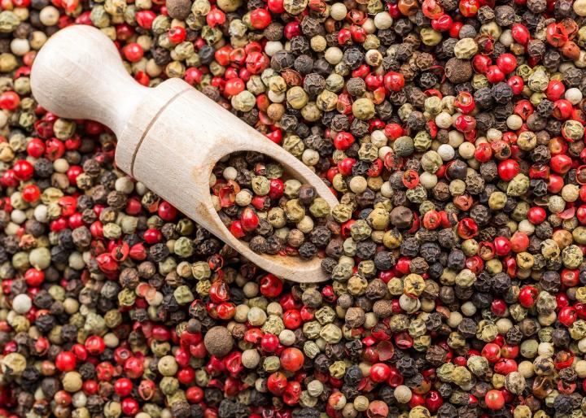
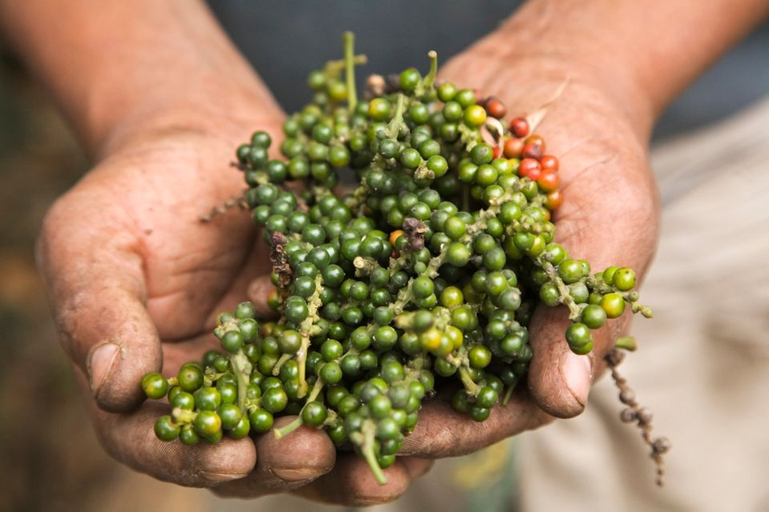
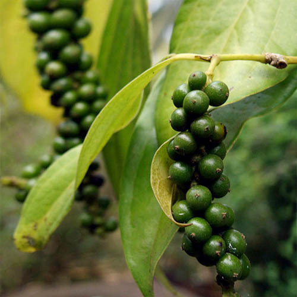
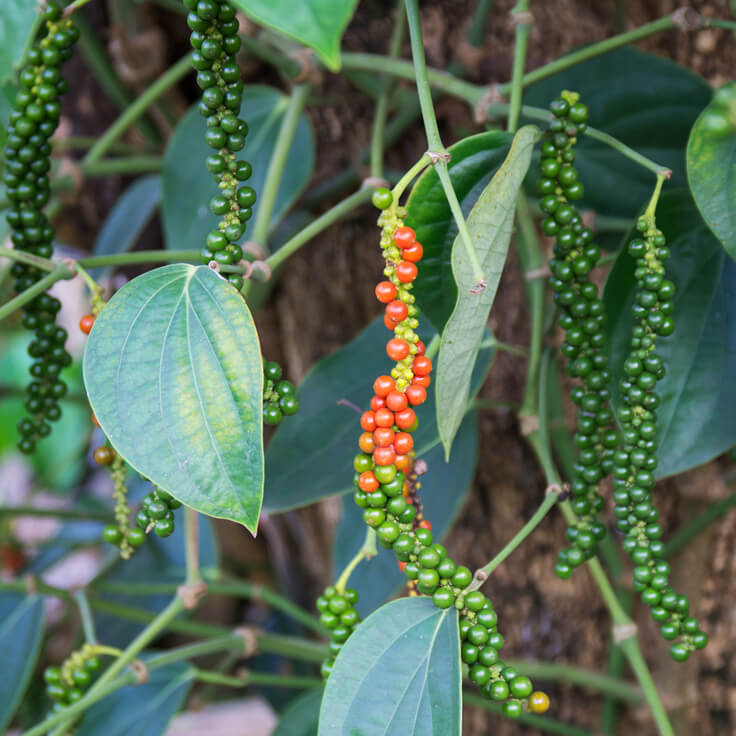

Filler
PEPPER
Peppercorn is the fruit of the black pepper plant (Piper nigrum) which is a climbing vine that grows about 30 ft from the Malabar Coast of India. Harvesting is done without any mechanical equipment. Then these green berries are spread out to dry in the sun for about a week and a half. During this period, the green berries blacken to the peppercorns we know today. Another alternative is to pick pepper berries that are about to turn red. They are then drowned in boiling water for 10 minutes. After removal, they turn black or dark brown in an hour and are spread out to dry in the sun for three to four days before being grounded in the factory.




